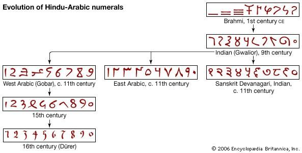
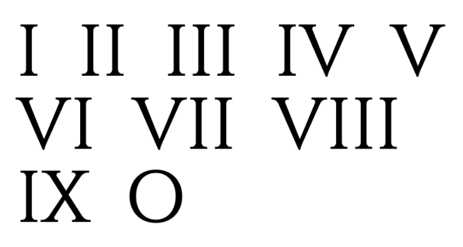
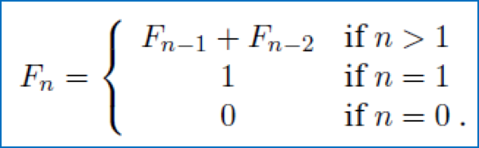
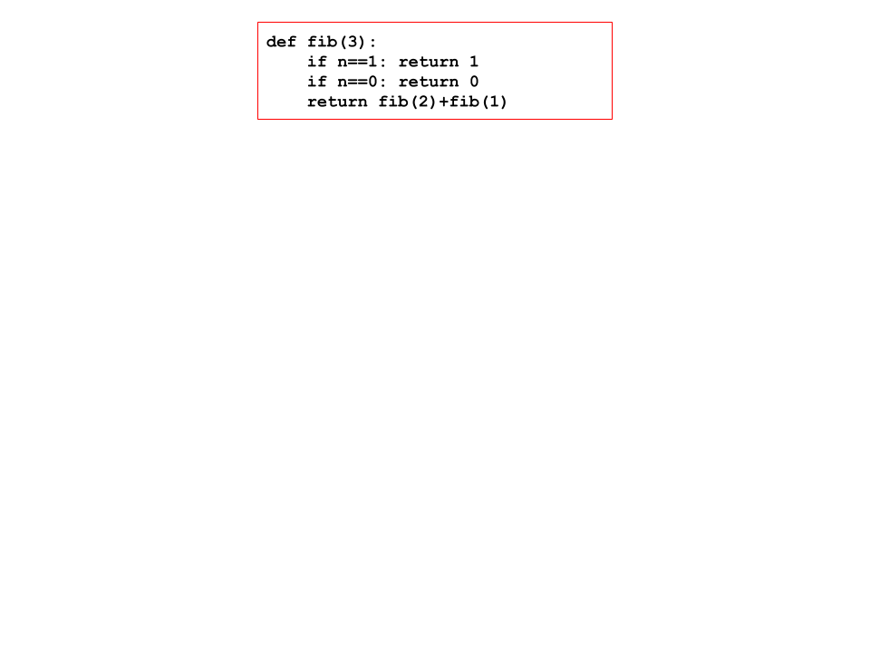
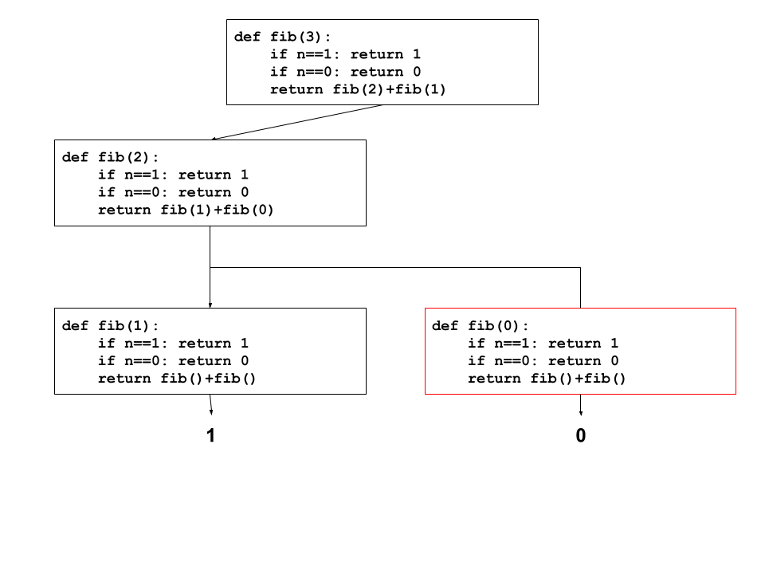
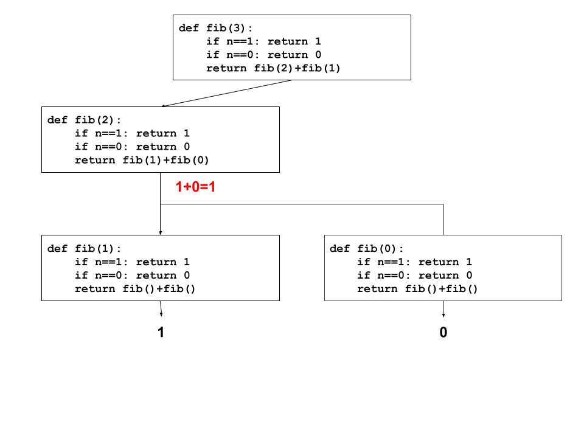
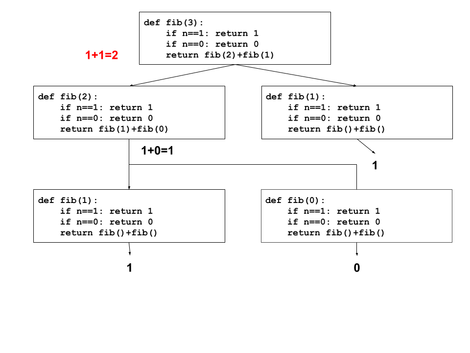
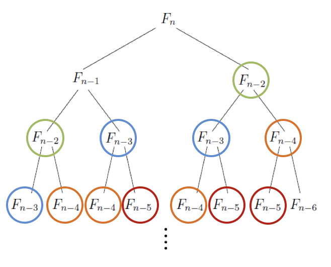
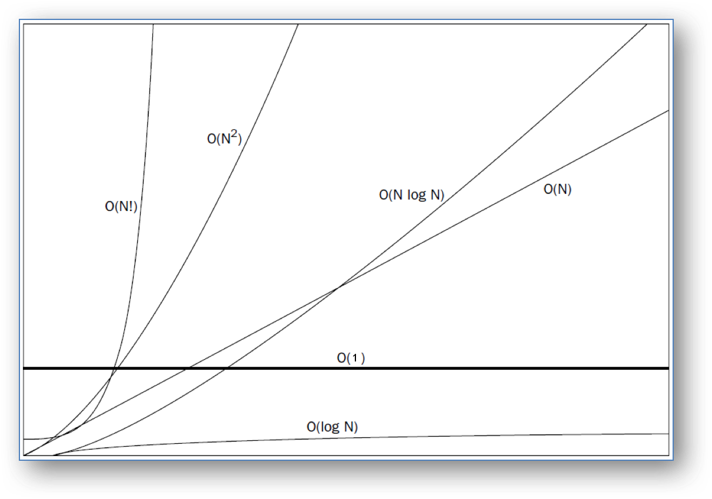
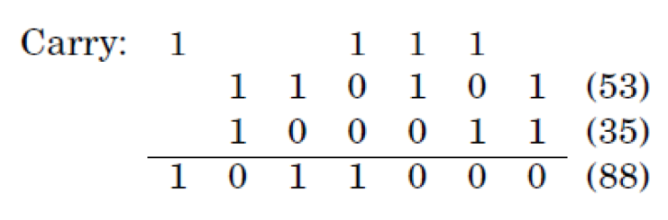

class: center, middle <center><img src="images/ub.png" width="150"></center> # **ALGORÍSMICA** ## Algorismes Numèrics I Jordi Vitrià, Mireia Ribera .blue[jordi.vitria@ub.edu] | .blue[ribera@ub.edu] --- name:sistnum ## Una mica d'història Cap a l’any 600, a l'Índia, es va inventar el sistema decimal de numeració. > Un sistema de numeració és un conjunt de símbols i regles de generació que permeten construir tots els nombres vàlids en el sistema. <center></center> Un **sistema de numeració** ve definit doncs per: + el conjunt `S` dels símbols permesos en el sistema. En el cas del sistema decimal són `{0,1...9}`; en el binari són `{0,1}`; en l'octal són `{0,1,...7}`; en l'hexadecimal són `{0,1,...9,A,B,C,D,E,F}`. + el conjunt `R` de les regles de generació que ens indiquen quins nombres són vàlids i quins no són vàlids en el sistema i a quina quantitat es refereix cada xifra. --- ## Una mica d'història La **notació posicional** és una possible regla, molt simple, de generació d'un sistema de numeració en el qual cada **dígit** té un valor diferent **depenent de la seva posició relativa** al nombre. Els sistemes de numeració romans i egipcis no són estrictament posicionals. Per això, és molt complex dissenyar algoritmes d'ús general (per exemple, per a sumar, restar, multiplicar o dividir). <center></center> El principal avantatge del sistema inventat a la Índia sobre els que es coneixien a Europa en aquells moments (com el romà) és la seva notació posicional i a causa d'això, la **simplicitat de les operacions (algorismes) aritmètiques**. --- ## Bases i Nombres Suposem que arribem a un pais desconegut i volem contar quantes persones <i class="material-icons" style="color:red;">accessibility</i> hi ha en un local determinat. Considerarem que cada una de les persones <i class="material-icons" style="color:red;">accessibility</i> és un element d'un conjunt. <center></center> Si ens diuen que hi ha <code>11</code> elements al conjunt, quantes <i class="material-icons" style="color:red;">accessibility</i> hi ha? Depèn de la **base** en que està escrit! La **base d’un nombre** determina el nombre de dígits diferents i el valor de les posicions dels dígits. + Si en aquest pais escriuen els nombres en base 2, <code>11</code> = <i class="material-icons" style="color:red;">accessibility</i><i class="material-icons" style="color:red;">accessibility</i><i class="material-icons" style="color:red;">accessibility</i>. + Si en aquest pais escriuen els nombres en base 10, <code>11</code> = <i class="material-icons" style="color:red;">accessibility</i><i class="material-icons" style="color:red;">accessibility</i><i class="material-icons" style="color:red;">accessibility</i><i class="material-icons" style="color:red;">accessibility</i><i class="material-icons" style="color:red;">accessibility</i><i class="material-icons" style="color:red;">accessibility</i><i class="material-icons" style="color:red;">accessibility</i><i class="material-icons" style="color:red;">accessibility</i><i class="material-icons" style="color:red;">accessibility</i><i class="material-icons" style="color:red;">accessibility</i><i class="material-icons" style="color:red;">accessibility</i>. --- ## Bases i Nombres Per entendre com una base representa la **cardinalitat d'un conjunt**, va bé pensar-ho així: <center><code>642</code> és 600 + 40 + 2 en BASE 10.</center> Això correspon a l'ús d'una fòrmula que ens permet entendre una base: $$ d_n \times R^{n-1} + \dots + d_2 \times R + d_1 $$ on `R` és la base del nombre i `d_i` és el dígit a la posició i-èssima del nombre. D'aquí surt que: $$ 642 = 6_3 \times 10^2 + 4_2 \times 10 + 2_1 \times 10^0$$ Les bases més importants en informàtica són: + DECIMAL és base 10 i té 10 dígits: `0,1,2,3,4,5,6,7,8,9` + BINARIA és base 2 i té 2 dígits: `0,1` + HEXADECIMAL és base 16 i té 16 dígits: `0,1,2,3,4,5,6,7,8,9,A,B,C,D,E,F` --- ## Una mica més d'història El sistema decimal de numeració va trigar molts anys en arribar a Europa. El medi de transmissió més important va ser un manual, escrit en àrab durant el segle IX a Bagdad, obra de **Al Khwarizmi**, en el que especificava els procediments per sumar, multiplicar i dividir nombres escrits en base deu. Els procediments eren precisos, no ambigus, mecànics, eficients i correctes. És a dir, eren algorismes (per a ser implementats sobre paper i no amb un ordinador!). Una de les persones que més van valorar aquesta aportació va ser Leonardo Fibonacci. <center><img src="images/fib.png" width="180" alt="Segell amb el bust de Leonardo Fibonacci"></center> --- name:fib ## Una mica més d'història Fibonacci és avui conegut sobretot per la seva seqüència: `0,1,1,2,3,5,8,13,21,34...` La seqüència es pot definir amb la següent regla matemàtica: <center></center> <div class=warnred> <b> Compte! </b> Això encara <b>no és un algorisme</b>, és només una definició escrita en notació matemàtica. Seguidament veurem diferents algorismes per implementar computacionalment aquesta definició! </div> Aquesta definició ens permet calcular mentalment alguns termes: + Quin és el valor de `F_2`? + Quin és el valor de `F_3`? --- ## Una mica més d'història Però si volem calcular més termes, ens adonem que la seqüència creix molt ràpid i ens cal un ordinador. Es pot demostrar (matemàticament) que el terme `n`-èssim de la seqüència té aproximadament aquest valor: $$ F_n \approx 2^{0.694n} $$ <div class=warnred> Això pot arribar a ser un valor molt gran fins i tot per una <code>n</code> "petita". Quan val per <code>n=30</code>?</div> Per calcular **exactament** un terme concret necessitem una **fòrmula** o un **algorisme**! La millor fòrmula que coneixem és la de dalt, però només ens dona una aproximació, no un valor exacte. Cal un algorisme --- ## Una mica més d'història Una primera possibilitat és aquesta (*algorisme recursiu*).red[*]: ```python def fib1(n): if n==0: return n if n==1: return n else: return fib1(n-1) + fib1(n-2) ``` + Copia aquest codi i calcula el terme 10 i el terme 100: [](https://colab.research.google.com/notebooks/empty.ipynb ) + Què ha passat quan has intentat calcular el terme 100? .footnote[.red[*]Un algorisme recursiu és un algorisme que es crida a si mateix.] --- ## Algorisme recursiu de Fibonacci Per entendre que ha passat ens cal entendre com funciona un algorisme recursiu. Els algorismes recursius, per executar-se, creen automàticament còpies d'ells mateixos (amb paràmetres diferents) creant un arbre. Quan la recursivitat s'acaba, reconstrueixen la solució movent-se cap enrera per l'arbre. --- ## Algorisme recursiu de Fibonacci <center></center> --- ## Algorisme recursiu de Fibonacci <center><img src="images/fibim2.png" width="750"></center> --- ## Algorisme recursiu de Fibonacci <center><img src="images/fibim3.png" width="750"></center> --- ## Algorisme recursiu de Fibonacci <center></center> --- ## Algorisme recursiu de Fibonacci <center></center> --- ## Algorisme recursiu de Fibonacci <center><img src="images/fibim6.png" width="750"></center> --- ## Algorisme recursiu de Fibonacci <center></center> --- ## Algorisme recursiu de Fibonacci De la mateixa manera que ho fariem per a qualsevol algorisme, ens podem fer tres preguntes (**les tres preguntes bàsiques de l'algorísmica**) sobre l'algorisme que hem escrit: <details> <summary><b>Pregunta</b>: És correcte? </summary> <b>Resposta</b> <br> En aquest cas és evident que sí, atès que segueix exactament la definició! </details> <details> <summary><b>Pregunta</b>: Quant trigarà? En aquest cas, té sentit preguntar-ho en funció de <code>n</code>, la mida del nombre que passem com a paràmetre. </summary> <b>Resposta</b> <br> Es pot demostrar que el nombre de passos computacionals que fa és de l'ordre de <code>F_n</code>. Per calcular el terme 200 hauria de fer de l'ordre de <code>2^138</code> passos. A l’ordinador més ràpid del món, que pot executar al voltant de 40.000.000.000.000 passos per segon, necessitaríem més temps que el necessari pel col·lapse del Sol! A la velocitat que els ordinadors augmenten la seva capacitat de càlcul, cada any que passa podríem calcular un nombre de Fibonacci més que l’any anterior!</details> <details> <summary><b>Pregunta</b>: Hi ha alguna manera millor de fer-ho? </summary> <b>Resposta</b> <br> Sí! </details> --- ## Algorisme recursiu de Fibonacci Per trobar una manera millor, només cal adonar-se de per què és tant lent: <center></center> <div class=warnred> <b> Observació: </b> Hi ha molts càlculs (en aquest cas, crides recursives) que es repeteixen! </div> Una solució possible és guardar el resultat de cada crida el primer cop que ho calculem i no tornar a calcular-ho. --- ## Algorisme de Fibonacci Anem a fer-ne una versió basada en **llistes**: <div class=warnblue> <b> Nota: </b> Les llistes en Python són <b>seqüències mutables d’objectes arbitraris</b>. Les llistes es manipulen amb diferents mètodes i s'accedeix als seus elements amb els operadors de "slicing". <a href="https://docs.python.org/3/tutorial/datastructures.html">Veure el tutorial de Python</a>. </div> ```python def fib2(n): if n==0: return 0 ls = [0,1] for i in range(2,n+1): ls.append(ls[i-1]+ls[i-2]) return ls[n] ``` <details> <summary><b>Pregunta</b>: És correcte? </summary> <b>Resposta</b> <br> És evident que és correcte, atès que segueix exactament la definició! </details> --- ## Algorisme de Fibonacci ```python def fib2(n): if n==0: return 0 ls = [0,1] for i in range(2,n+1): ls.append(ls[i-1]+ls[i-2]) return ls[n] ``` <details> <summary><b>Pregunta</b>: Quant trigarà? </summary> <b>Resposta</b> <br> Només executa <code>(n-1)</code> vegades la iteració. <br> Direm que <code>fib2(n)</code> és <b>lineal</b> (o polinòmic) respecte <code>n</code>. El seu únic defecte és que crea una llista que, per termes molt grans, serà molt gran! </details> + Copia aquest codi i calcula el terme 1000: [](https://colab.research.google.com/notebooks/empty.ipynb ) -- Però encara ho podem fer millor! --- ## Algorisme de Fibonacci ```python def fib3(n): a,b = 0,1 for i in range(1,n+1): a,b = b, a+b return a fib3(10) > 55 ``` <details> <summary><b>Pregunta</b>: Quant trigarà? </summary> <b>Resposta</b> <br> Només executa <code>(n-1)</code> vegades la iteració. <br> També direm que <code>fib3(n)</code> és <b>lineal</b> (o polinòmic) respecte <code>n</code>. <br> Però ara té un valor afegir: la quantitat de memòria que fa servir és mínima. </details> + Copia aquest codi i calcula el terme 1000000: [](https://colab.research.google.com/notebooks/empty.ipynb ) + Quants dígits té el valor resultant? <div class=warnblue> <b> Nota: </b> Pel nombre d'iteracions que fa, podriem pensar que no és cap problema calcular el terme 100.000.000, però si ho proveu, no funciona. <br> El motiu no és el nombre d'iteracions, sinó la mida dels termes que va calculant, que col·lapsan la memòria de l'ordinador. </div> --- ## Com hem de comptar els **passos computacionals** d'un algorisme? La **regla bàsica** és considerar de la mateixa categoria les **instruccions simples** com emmagatzemar un enter o caràcter a memòria, fer comparacions, fer operacions aritmètiques, etc. L'ordinador fa totes aquestes operacions en 1 pas. Per tant, aquest algorisme: ```python a = 5 b = 4 for i in [1,2,3]: a = a+b ``` fa només 8 passos computacionals. L'única excepció a aquesta regla és si manipulem nombres molt grans (que ocupen més de 64 bits), perquè llavors l'ordinador ja no ho fa en un pas. --- ## Com hem de comptar els **passos computacionals** d'un algorisme? Aquestes operacions no són tan barates! ```python import math a = 1234585127527575235234982374598245 b = 8112387512759287512875851285789127 for i in range(327864287686868676876876876887986): a += math.sqrt(a+b) ``` Caldrà tenir en compte quina complexitat computacional té operar dos nombres d’aquestes característiques. --- name:granO ## La notació Gran O Aquesta notació és una convenció per no ser ni massa ni massa poc precisos a l’hora d’escriure la complexitat computacional d’un algorisme (= nombre de passos). La regla principal és comptar el nombre de passos computacionals **aproximats** en funció de la **mida de l'entrada**. <div class=warnblue> Farem una aproximació d'aquest estil: enlloc de dir que té una complexitat de <code>5 x n^3 + 4 x n + 3</code> direm que té una complexitat de <code>O(n^3)</code> </div> Per fer-la, utilitzarem aquestes **convencions**: + Ometrem les constants multiplicatives: `14n^2 és n^2`. + `n^a` domina sobre `n^b` si `a>b`: `n^2` domina sobre `n`. + Qualsevol exponencial domina sobre un polinomi: `3^n` domina sobre `n^5` (i també sobre `2^n`). + Qualsevol polinomi domina sobre un logaritme: `n` domina sobre `log(n)^3` i `n^2` domina sobre `nlog(n)`. --- ## La notació Gran O Les convencions que hem fet es poden entendre quan veiem con evoluciona el valor de cada funció a mesure que la <code>n</code> va creixent: <center></center> --- ## La notació Gran O També és útil veure en termes absoluts: <center><img src="images/grano2.png" width="550"></center> <div class=warnblue> <b> Observació: </b> <br> + Qualsevol algorisme amb <code>n!</code> és inútil a partir de <code>n=20</code><br> + Els algorismes amb <code>2^n</code> són inútils a partir de <code>n=40</code><br> + Els algorismes amb, <code>n^2</code> comencen a ser costosos a partir de <code>n=10.000</code> i a ser inútils a partir de <code>n=1.000.000</code><br> + Els algorismes amb <code>n</code> i els <code>nlog(n)</code> poden arribar fins a <code>n=1.000.000.000</code><br> + Els algorismes <code>log(n)</code>, són útils per qualsevol <code>n</code>. <br> </div> --- ## La notació Gran O Les famílies més importants d’algorismes reben aquests noms: + **Constant**, `O(n) = 1`, com `f(n) = min(n,1)`, que no depenen de `n`. + **Logarítmic**, `O(n) = log(n)`. + **Lineals**, `O(n) = n`. + **Super-lineals**, `O(n) = nlog(n)`. + **Quadràtics**, `O(n) = n^2`. + **Cúbics**, `O(n) = n^3`. + **Exponencials**, `O(n) = c^n` per `c`>1. + **Factorials**, `O(n) = n!` --- class: center, middle, inverse name:tema2 ## **Aritmètica Bàsica** --- ## Aritmètica Bàsica: Preliminar Quan fem un **canvi de base** a un nombre, la mida del nombre només es veu afectada lleugerament, per un factor multiplicatiu "petit". És a dir, si el nombre s'escrivia amb `n` dígits, després del canvi s'escriurà amb `(a * n)` dígits, amb `a` relativament petit. Això té molta importància des del punt de vista del càlcul de complexitat dels algorismes: <div class=warnred> Des del punt de vista de complexitat, el canvi de base no afecta a la "mida" del nombre! <br> Quan calculem la complexitat d'un algorisme per un nombre escrit en una determinada base, l'ordre de complexitat serveix per les altres bases. </div> > Si multiplicar nombres en base 2 té una complexitat `O(n^2)`, fer-ho en base 16 té la mateixa complexitat. --- name:suma ## Aritmètica Bàsica: Suma <div class=warnblue> Per simplicitat, al explicar les operacions aritmètiques considerarem que els nombres estan en base 2. </div> Hi ha una propietat dels nombres (que es compleix per totes les bases `b >= 2`) que ens serà molt útil: + La suma de tres nombres d’un sol dígit té com a màxim dos dígits. Aquesta regla ens permet definir una regla/algorisme general per sumar dos nombres en qualsevol base: la que hem après a l’escola! <center></center> --- ## Aritmètica Bàsica: Suma **Quina complexitat té l'algorisme de la suma** `(x+y)`? Per respondre tindrem en compte aquestes consideracions: + Aquesta pregunta la farem sempre en relació a la mida (nombre de bits) dels elements de l'entrada. + Suposarem que fem servir un ordinador que opera a nivell de bits, i que per cada operació simple entre dos bits (`+`,`*`,comparació, etc...) té una complexitat `O(1)` + Un ordinador real no opera a nivell de bits, sinó de grups de 64 bits: cada operació entre nombres de menys de 64 bits té `O(1)`. Això vol dir que divideix per 64 el cost que calcularem nosaltres, però això és només un factor multiplicador, que podem despreciar. --- ## Aritmètica Bàsica: Suma **Quina complexitat té l'algorisme de la suma** `(x+y)`? Considerem que tant `x` com `y` tenen `n` bits. Llavors la seva suma `(x+y)` té com a màxim `n+1` bits, tal com hem vist abans. Per tant, **la seva complexitat és `O(n)`**, perquè fem un nombre de sumes de dos dígits que és proporcional a la mida del nombre. -- Es pot fer millor? -- No! Per sumar `n` bits com a mínim s’han de poder llegir i escriure, i això ja són `2n` passos! --- name: mult ## Aritmètica Bàsica: Multiplicació **Quina complexitat té l'algorisme de la multiplicació** `(x*y)`? L'algorisme de la multiplicació o producte que ens han ensenyat a l’escola és: <center><img src="images/mult.png" width="550" alt="multiplicació segons el mètode tradicional, amb tots els passos, de 1101 per 1011"></center> Tenim `n` multiplicacions de complexitat `n` (un bit per `n` bits) + aproximadament `2n` sumes de complexitat `n`, que és un total de `(n^2 + 2n^2) = 3n^2` i per tant la **complexitat total de la multiplicació és `O(n^2)`**. --- ## Aritmètica Bàsica: Multiplicació L'algorisme que hem après a l'escola no és l'únic possible! Al Khwarizmi ens va donar un segon algorisme (i que avui encara s’utilitza en uns quants països!) + Escrivim els nombres un al costat de l’altre. + Repetim aquestes operacions: “Dividim el primer per dos i l’arrodonim"; "Doblem el segon"; fins que el primer nombre és `1`. + Sumem els nombres de la segona columna que corresponen a totes les files on el nombre de la primera columna és senar i obtenim el resultat. Exemple: `11 x 13`: <center><img src="images/mult2.png" width="100" alt="dues columnes de dalt a baix 11 13, 5 26, 2 52, 1 104; resultat 143"></center> --- ## Aritmètica Bàsica: Multiplicació L'algorisme d'Al Khwarizmi es pot escriure, de forma recursiva, així: ```python def mult(x,y): import math if y==0 or x==0: # en aquest cas arribem a 0 return 0 z = mult(math.floor(x/2),y) # fem les crides reduint x if x%2 == 0: return 2*z # en el retorn és quan doblem y else: return y+2*z # només si és senar el sumem print(mult(11,13)) ``` --- ## Aritmètica Bàsica: Multiplicació La seva complexitat es pot deduir fent aquestes dues observacions: + L’algorisme s'acaba després de `n` crides recursives. Això es pot entendre si ens fixem en que, cada vegada que cridem la funció recursivament, anem dividint per `2` el paràmetre `x`. Al cap de `n` crides el paràmetre ja valdrà `0`. Per exemple, si `x=16`, que necessita 5 bits, després de 5 crides el paràmetre ja valdrà 0. + A cada crida recursiva fem `O(n)` operacions, atès que multiplicar un nombre per dos té un cost `O(n)`. Multiplicar per 2 en binari és simplement desplaçar els bits una posició: multiplicar per 2 el nombre `001001` dóna `010010`. Per tant, si fem `n` crides que costen `n` operacions, el cost és `O(n^2)`. --- ## Aritmètica Bàsica: Multiplicació Es pot fer millor, amb una complexitat menor que `O(n^2)`? La resposta és sí! Però només, una mica millor! Però això ho veurem més endavant. --- name: div ## Aritmètica Bàsica: Divisió La divisió `x/y` consisteix en trobar un quocient `q` i una resta `r` de manera que: $$ x = y \times q + r $$ amb `r < y`. La seva versió recursiva és: ```python def div(x,y): import math if x<=0: return 0,0 if y==1: return x,0 q,r = div(math.floor(x/2),y) q = 2*q #desfem la divisió per 2 r = 2*r #desfem la divisió per 2 if x%2 != 0: r += 1 #recuperem el que hem perdut amb el floor if r >= y: r = r-y q = q+1 #aquí és on anem augmentant el quocient return q,r ``` Amb el que hem vist abans, és fàcil deduïr que **la seva complexitat és `O(n^2)`**.